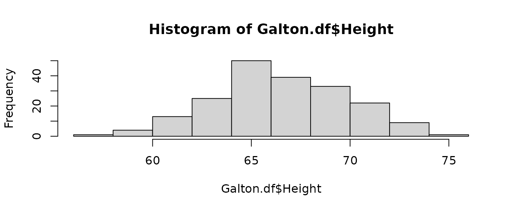
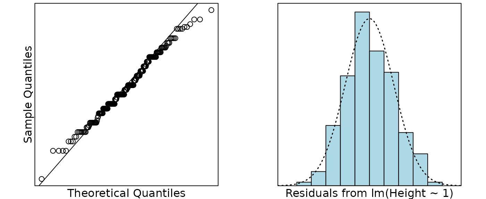

Case Study 3.2: STATS 201/8 Extra Case Study - One Sample
Source:vignettes/articles/CS3_2.Rmd
CS3_2.RmdQuestion
For this question, we are getting historic. In 1886, Francis Galton presented a data set on a sample of 928 adult British children from 197 sets of parents. For each child, he had recorded their adult height and the average of their parent’s heights. He then analysed the relationship between their heights.
However, for this question, we are just interested in a simpler question. How do heights of people in Britian in 1886 compare to heights of people now? We will use the sample of children’s adults heights to answer this. In particular, we wish to see if the average height in 1886 in Britain is different from the average height of 70 inches, which is today’s estimated average adult height in Britain.
The data on the children’s heights from Galton’s 1886 dataset is in the file Galton3.csv, which contains the variable:
| Variable | Description |
|---|---|
| Height | the adult height (inches) of the child |
Instructions:
- Make sure you change your name and UPI/ID number at the top of the assignment.
- Comment on the plot of the data.
- Manually calculate the t-statistic for comparing the mean height to 70 inches and the corresponding 95% confidence interval.
- Galton’s original data set originally included multiple children from families with over 500 children from the 197 families. For the purposes of this analysis, we took a subset of the data, with one child randomly selected from each family,reducing the data to 197 observations. Why did we do this?
- Write an appropriate Executive Summary.
Question of interest/goal of the study
We are interested in seeing if the average height if these British children (when they were adults) is different from the average height of 70 inches which is today’s estimated average adult height.
Read in and inspect the data:

## Min. 1st Qu. Median Mean 3rd Qu. Max.
## 57.00 64.50 66.50 66.79 69.50 75.00Comment on the plot/exploratory data analysis
The heights appear to be centred around 67 and reasonably symmetric (and looking roughly normal).
Manually calculate the t-statistic for testing if the underlying mean is 70, and the 95% confidence interval for the mean.
Formulas: and 95% confidence interval
NOTES: The R code mean(y) calculates
.
The standard error is
where
is the standard deviation of
and is calculated by sd(y), and
is the number of data-points calculated by length(y). The
degrees of freedom is
.
The
multiplier is given by the R code qt(0.975, df).
ybar = mean(Galton.df$Height)
n = length(Galton.df$Height)
se.ybar = sd(Galton.df$Height) / sqrt(n)
# t-statistic for H0: mu=70 :
(ybar - 70) / se.ybar## [1] -13.51375
# 95% confidence interval for the mean:
ybar - qt(0.975, n - 1) * se.ybar## [1] 66.32253
ybar + qt(0.975, n - 1) * se.ybar## [1] 67.25919## [1] 66.32253 67.25919Repeat the same calculation using the t.test function (done for you):
t.test(Galton.df$Height, mu = 70)##
## One Sample t-test
##
## data: Galton.df$Height
## t = -13.514, df = 196, p-value < 2.2e-16
## alternative hypothesis: true mean is not equal to 70
## 95 percent confidence interval:
## 66.32253 67.25919
## sample estimates:
## mean of x
## 66.79086Note: You should get exactly the same results from the manual calculations and using the function. Doing this was to give you practice using some R code. The function also delivers the p-value that we did not calculate above.
Fit and check the null model (done for you):

cooks20x(Galton.fit)
summary(Galton.fit);##
## Call:
## lm(formula = Height ~ 1, data = Galton.df)
##
## Residuals:
## Min 1Q Median 3Q Max
## -9.7909 -2.2909 -0.2909 2.7091 8.2091
##
## Coefficients:
## Estimate Std. Error t value Pr(>|t|)
## (Intercept) 66.7909 0.2375 281.3 <2e-16 ***
## ---
## Signif. codes: 0 '***' 0.001 '**' 0.01 '*' 0.05 '.' 0.1 ' ' 1
##
## Residual standard error: 3.333 on 196 degrees of freedom
confint(Galton.fit)## 2.5 % 97.5 %
## (Intercept) 66.32253 67.25919
70 - confint(Galton.fit)## 2.5 % 97.5 %
## (Intercept) 3.677465 2.740809Galton’s original data set originally included multiple children from families with over 500 children from the 197 families. For the purposes of this analysis, we took a subset of the data, with one child randomly selected from each family,reducing the data to 197 observations. Why did we do this?
Having multiple children from the same family would have violated the independence assumption (and required a more complicated form of analysis).
Method and Assumption Checks
As this data consists of one measurement (the child’s height as as an adult) we have applied a one sample t-test to it, equivalent to an intercept only linear model (null model).
We have a random sample of 197 children (who were measured when adult), and we wished to see if their average height is the same as the current average height of people which is 70 inches. The child’s height should be independent of each other. Checking the normality of the differences reveals no problems. There were no unduly influential points.
Our model is: where
Executive Summary
We are interested if the average height of these children (as adults) which was measured since 1886 is different from the current population average height of 70 inches.
There was evidence to suggest that British people have got taller on average since 1886.
We estimate the height of adults in 1886 to be, on average, between 66.3 and 67.3 inches.
Thus, the average increase in height was estimated as between 2.7 and 3.7 inches since 1886.